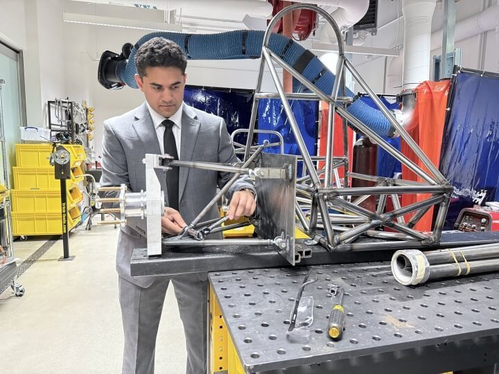
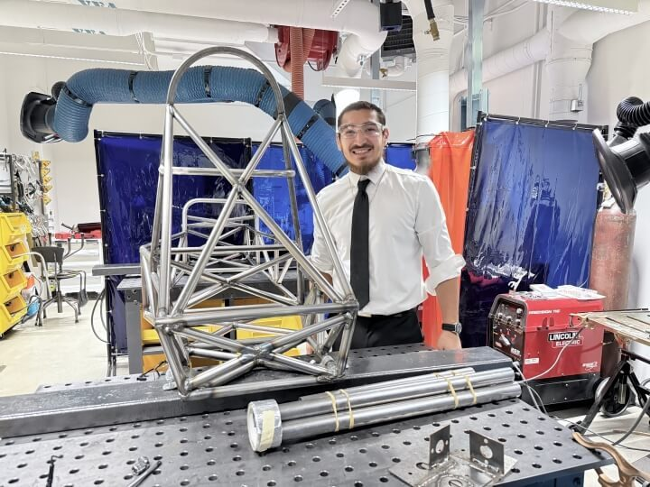
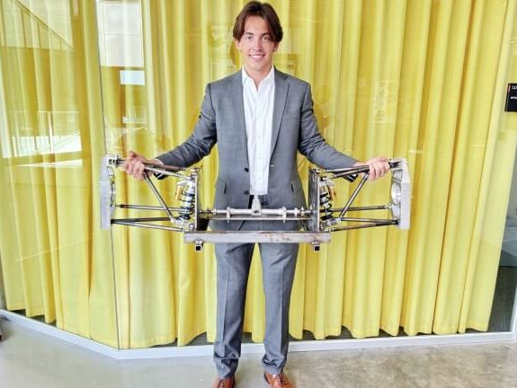
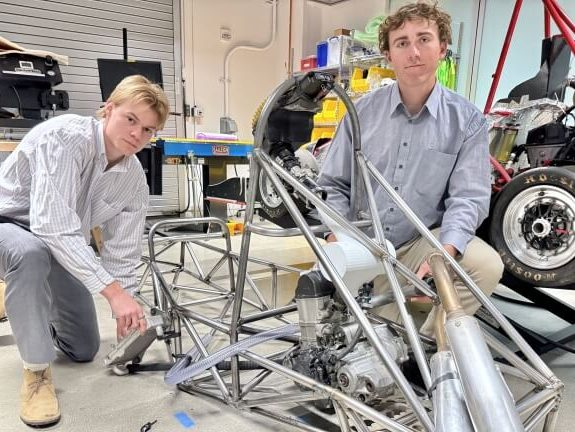
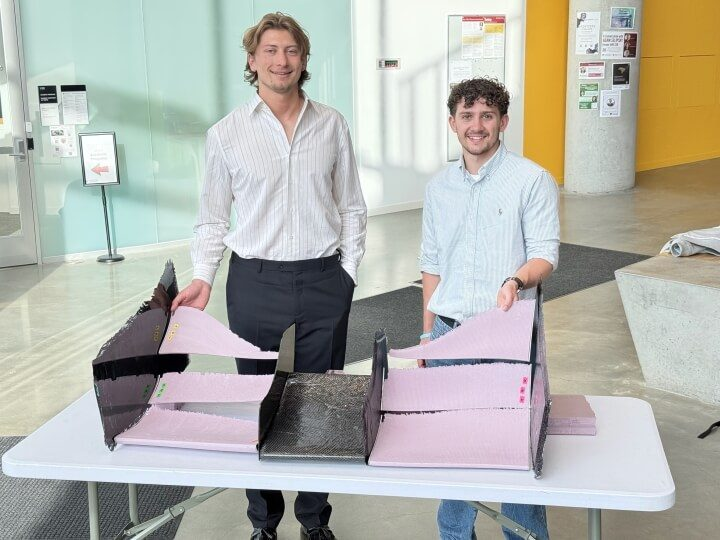
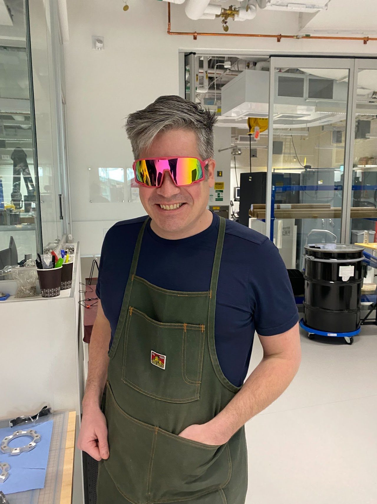
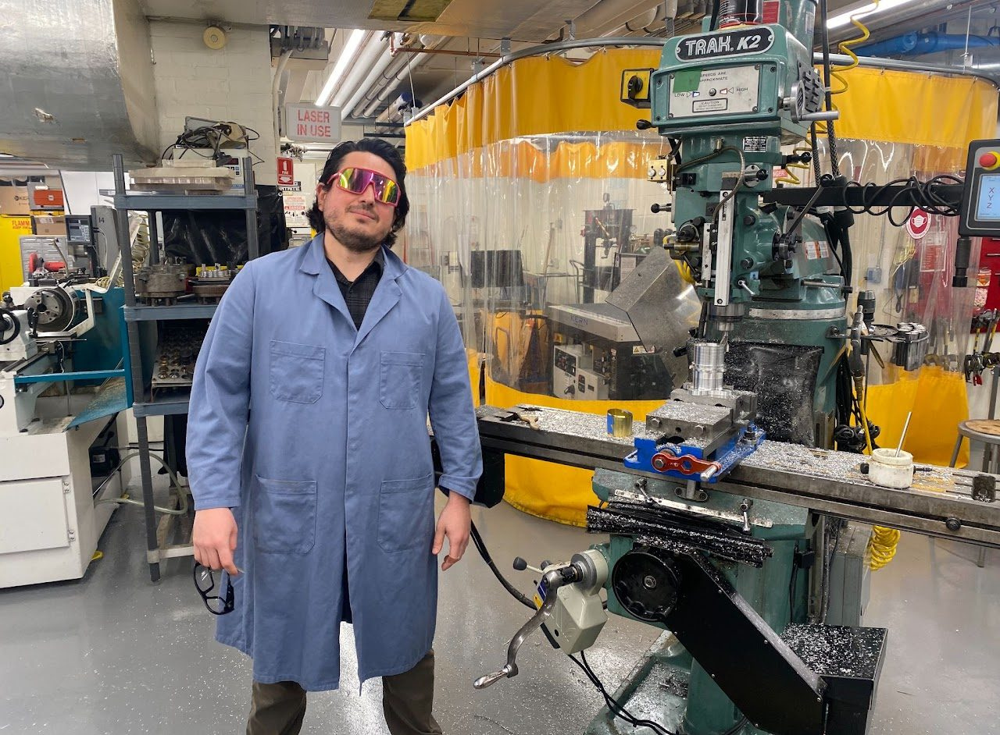

Early Stages - April 2024
Prior to the 2024-25 school year, there had never been a Formula SAE team at Harvard. There was the Harvard Undergraduate Automotive Society (HUAS), which was an umbrella organization for various interests automotive related. I was a senior during the 2024-25 school year and served as President for HUAS.
I knew I wanted to work on something FSAE related for my Senior Mechanical Engineering Capstone Project. The previous Vice President, Tommaso Serafin, made a front suspension for an FSAE car for his capstone the prior year. He hoped that eventually Harvard would form an FSAE team and utilize his capstone. My friends, Edwin Dominguez and Jack Meyer, were both also interested. We decided that I would make the rear suspension, Edwin would make the chassis and Jack would integrate the steering with the front suspension.
It had always been hard to start an FSAE team, as for the lack of foundational work defers many students from wanting to join. The capstone is a year long process and essentially guarantees substantial progress (in order for a student to graduate). With multiple capstone projects directed towards FSAE, considerable progress can be made towards creating the infrastructure for an FSAE vehicle. At this point, the staff for the capstone project encouraged us to start the team. Peter Fischer and Josh Gordon were recruited to work on the powertrain. Oliver Murcko and Steffan Jones were recruited to work on the aerodynamics.
It was in agreement that the students involved with the FSAE capstone would have limited energy outside of it to direct towards starting a club. In addition, for the club to continue, it needs underclassmen to be involved to carry the torch, as the seniors would be graduating right after. As President of HUAS, it was my duty to establish the foundation and organization of the FSAE team, whilst coordinating with the capstone group. This was to be done from a clean slate with no members.

Beginning - September 2024
The first step was to recruit new members. This was first attempted through the extracurriculars fair, where one side of the front suspension was brought to a table with a printed QR code for a sign up form. I then sent an email blast through the engineering society mailing list. An introductory meeting was held to orient the attendees with the above information. The idea was that not much work towards the vehicle could be done through the club side, as the capstone group wouldn't have major designs locked down until around November and December. Funding was also incredibly low, so purchased components could not even be bought or prepped.
Since many of these new members were freshman and didn't have much exposure to engineering, an onboarding project was assigned. This was the go-kart project from the clubs past, which never got completed, again, due to lack of members. Sub teams were created and it was an opportunity for members to be given a major subcomponent and be able to research and design their solution. The club met once a week and this continued to around late November. Tanya Nuno joined the club early on and became heavily involved in the business development side of the team. It was crucial to create a sponsorship package to send out to different companies and organizations as fundraising is extremely necessary for starting and maintaining an FSAE team. This all seemed quite difficult without an existing car and without physical prototypes as it was early on in terms of the capstone timeline. Momentum increased drastically as design reviews for the capstone were completed before winter break.
Flooring It - February 2025
After winter break, most of the designs were locked down on the capstone side of things. The underclassmen/club side of things also completely pivoted to working on FSAE. Naturally, membership dropped since September, but members continued work towards the car. Several members stepped up to more active leadership positions for the FSAE team.
- Davina Komaravalli was appointed Vice President for the remainder of the year
- Michael Maines lead the pedal box assembly and braking system
- Angie Wong had been lead for electrical since September
- Justice Hickman-Maynard and Eunice Park lead the seat & safety design
- Sofia Zhang lead manufacturing
- Tanya Nuno continued to lead business development for the team
The finalization of the chassis and much of the powertrain components removed large barriers that were keeping the club in a design freeze. With this lifted, increased progress was made towards the car from both the club and capstone side of the team.


Capstones Completed - March 2025
The capstone projects were completed, presented and the seniors that worked on them for so long rightfully retired until graduation. Club work continued towards the car, with funding still proving to be the greatest barrier. I preferred to use existing funds towards design and fabrication of our own components rather than making large purchases towards pre-built components. Otherwise, the money is gone and club designs can't be fabricated. I also had one heavily emphasized rule that we will not create/buy team merchandise until we have something that resembles a car. The club was in a good spot and my last job was to ensure that leadership for next year is elected.
Our election process had everyone in the club congregate. We would go through each position and for each position, the people running for it would leave the room and the rest would discuss and vote. The results are as follows for the 2025-26 school year:
President - Davina Komaravalli '26
Vice President - Tanya Nuno '27
Treasurer - Angie Wong '27
Business Development - Tanya Nuno'27
Social Chair - Eunice Park '28
Mechanical Co-Leads - Eunice Park '28 + Michael Maines '27 (Manufacturing Focus)
Electrical/Powertrain/Drivetrain Co-Leads- Angie Wong '27 + Sofia Zhang '28 (Manufacturing Focus)
I will continue to serve the team as an advisor.










MIT & FSAE Electric Visits - April 2025
To gain more insight into what it is like running a team, Davina, Michael, Eunice, Tanya and I visited MIT's FSAE team and met with Faris Elnager, Sam Huelsnitz and Kate Carpenter. Immense thanks to them for welcoming us to their space, showing us around and giving incredible insight into their team organization and operations. They also recommended we check out the FSAE Electric competition in New Hampshire to get a further sense of what competition is like.
As this occurred during a busier time of the semester, only a handful of our team could attend to check out the competition. After confirming with the competition staff that it was okay to attend, Jack, Davina, Sofia, Angie, Eunice, Tanya and I headed up to NH. We split up and met with many teams while also spectating different events and presentations, gaining valuable insight into what our team must focus on as we develop our car as well as forming connections with teams for potential collaboration.


Acknowledgements
This trip essentially marked the end of my presidency as finals were right afterwards. I could not be happier with the way things turned out with the team. I am incredibly grateful for the capstone group and the club members for the incredible dedication and effort that they put into this team. I can say we have something that resembles a car. Ideally we wait just a teeny bit longer to buy any merch. The rule might have to be amended so that merch can only be bought when the car can drive. That's not on me anymore though.
In just one year, this group designed and fabricated key subsystems and built infrastructure for the team's structure and future. Harvard is now substantially closer to being represented in FSAE with it's own vehicle and team. There is still plenty of work to be done, but I am incredibly amazed by what this team has been able to accomplish and what it will continue to accomplish in the coming years.
In addition to all the members of the Crimson Motorsport team, incredible help has be given to this team from the following:
- Tommaso Serafin & Tony Paganis for advising my capstone project and giving advice to the team
- David Sekoll for teaching us how to machine, design for machining and also helping us machine
- Alejandro Lopez for saving me individually with my thesis by helping me machine my wheel hub
- Rachel De Lucas for advising the club and the capstone group
- Mo Souri for leading capstone group section
- Erik Madsen for advising the capstone groups
- Katia Bertoldi for leading the capstone course and helping us with FEA modeling of our projects
- Faris Elnager, Sam Huelsnitz, Kayla Truong and Kate Carpenter from MIT for welcoming us and giving us advice for developing the team



